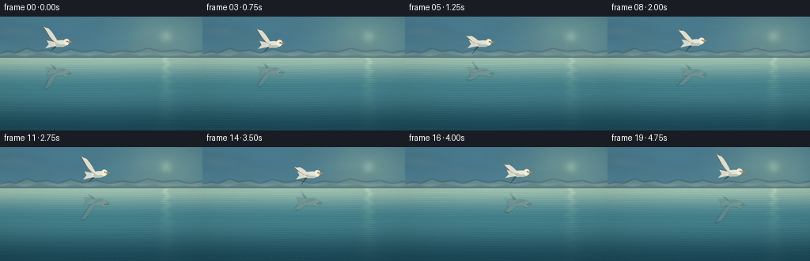
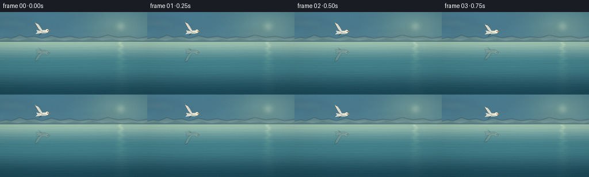
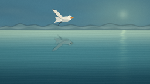
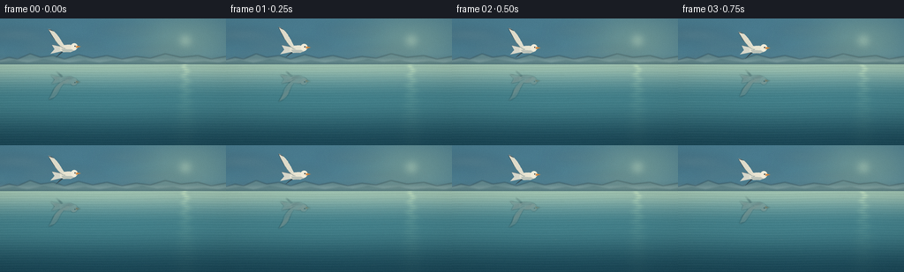
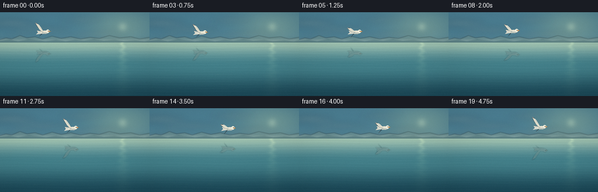
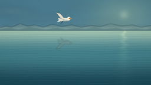
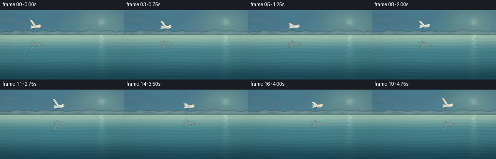

CODING AGENTS AS PIXEL WORLD MODELS
traex/DeepSeek-V4.1-Flash · phygen_056
点击播放 · 原生 RGB 像素
逐轮保存的候选
回放视频、检查图与代码变化。
每份候选均可单独播放。实际图片检查记录在下方工具轨迹中。
候选 01播放与检查图
点击播放 · 原生 RGB 像素

展开代码变化
--- 上一保存版本
+++ 本次保存版本
@@ -0,0 +1,419 @@
+"""Procedural RGB video: a gull crossing a calm lake at dawn."""
+
+from pathlib import Path
+import json
+
+import numpy as np
+from PIL import Image, ImageDraw, ImageFilter
+
+import artifact_io
+
+
+ROOT = Path(__file__).resolve().parent
+SPEC = json.loads((ROOT / "task_spec.json").read_text())
+W, H = SPEC["width"], SPEC["height"]
+N, FPS = SPEC["frames"], SPEC["fps"]
+S = 4
+RW, RH = W * S, H * S
+HORIZON = 52.0
+
+
+def lerp(a, b, t):
+ return a + (b - a) * t
+
+
+def smoothstep(t):
+ t = np.clip(t, 0.0, 1.0)
+ return t * t * (3.0 - 2.0 * t)
+
+
+def cubic(p0, p1, p2, p3, steps=28):
+ t = np.linspace(0.0, 1.0, steps)[:, None]
+ u = 1.0 - t
+ return (
+ u**3 * np.asarray(p0)
+ + 3.0 * u**2 * t * np.asarray(p1)
+ + 3.0 * u * t**2 * np.asarray(p2)
+ + t**3 * np.asarray(p3)
+ )
+
+
+def rgba_layer():
+ return Image.new("RGBA", (RW, RH), (0, 0, 0, 0))
+
+
+def make_sky():
+ y = np.linspace(0.0, 1.0, RH)[:, None, None]
+ top = np.array([75, 126, 146], dtype=np.float32)
+ middle = np.array([153, 191, 194], dtype=np.float32)
+ low = np.array([226, 218, 196], dtype=np.float32)
+
+ lower_t = smoothstep((y - 0.16) / 0.84)
+ sky = top * (1.0 - lower_t) + middle * lower_t
+ horizon_t = smoothstep((y - 0.55) / 0.45)
+ sky = sky * (1.0 - horizon_t) + low * horizon_t
+
+ # A broad, quiet sunrise glow behind the hills.
+ yy, xx = np.mgrid[0:RH, 0:RW].astype(np.float32)
+ lx, ly = xx / S, yy / S
+ sun_x, sun_y = 210.0, 25.0
+ glow = np.exp(-(((lx - sun_x) / 58.0) ** 2 + ((ly - sun_y) / 33.0) ** 2))
+ sun = np.exp(-(((lx - sun_x) / 7.5) ** 2 + ((ly - sun_y) / 7.5) ** 2))
+ sky = sky + glow[..., None] * np.array([34, 25, 5], dtype=np.float32)
+ sky = sky + sun[..., None] * np.array([30, 25, 16], dtype=np.float32)
+ return np.clip(sky, 0, 255)
+
+
+def add_clouds(image):
+ layer = rgba_layer()
+ draw = ImageDraw.Draw(layer)
+ clouds = [
+ (18, 19, 44, 3.0, (244, 240, 222, 58)),
+ (72, 31, 48, 2.6, (246, 239, 218, 52)),
+ (139, 14, 38, 2.2, (245, 241, 226, 42)),
+ (176, 38, 45, 2.1, (246, 235, 210, 55)),
+ (32, 40, 24, 1.5, (247, 236, 213, 44)),
+ (122, 43, 29, 1.4, (250, 237, 213, 40)),
+ ]
+ for cx, cy, half_w, half_h, color in clouds:
+ box = (
+ (cx - half_w) * S,
+ (cy - half_h) * S,
+ (cx + half_w) * S,
+ (cy + half_h) * S,
+ )
+ draw.ellipse(box, fill=color)
+ box2 = (
+ (cx - half_w * 0.55) * S,
+ (cy - half_h * 1.5) * S,
+ (cx + half_w * 0.62) * S,
+ (cy + half_h * 1.1) * S,
+ )
+ draw.ellipse(box2, fill=color)
+ layer = layer.filter(ImageFilter.GaussianBlur(5.5 * S))
+ return Image.alpha_composite(image.convert("RGBA"), layer)
+
+
+def add_hills(image):
+ layer = rgba_layer()
+ draw = ImageDraw.Draw(layer)
+
+ far = [
+ (0, 52), (0, 47), (10, 44), (20, 46), (34, 40), (46, 44),
+ (60, 42), (73, 46), (89, 41), (105, 45), (121, 42),
+ (138, 46), (154, 43), (170, 45), (187, 40), (205, 44),
+ (224, 42), (239, 46), (256, 43), (256, 52),
+ ]
+ draw.polygon([(x * S, y * S) for x, y in far], fill=(111, 148, 148, 168))
+
+ near = [
+ (0, 52), (0, 49), (16, 47), (31, 50), (49, 46), (64, 48),
+ (78, 50), (96, 47), (112, 50), (129, 47), (144, 49),
+ (161, 46), (178, 49), (196, 47), (211, 50), (231, 48),
+ (247, 50), (256, 48), (256, 52),
+ ]
+ draw.polygon([(x * S, y * S) for x, y in near], fill=(72, 112, 113, 154))
+
+ # Pale mist softens the far shoreline into the lake.
+ layer = layer.filter(ImageFilter.GaussianBlur(0.65 * S))
+ mist = rgba_layer()
+ md = ImageDraw.Draw(mist)
+ md.rectangle((0, 45 * S, RW, 52 * S), fill=(218, 218, 201, 52))
+ mist = mist.filter(ImageFilter.GaussianBlur(2.3 * S))
+ layer = Image.alpha_composite(layer, mist)
+ return Image.alpha_composite(image.convert("RGBA"), layer)
+
+
+def make_water_base(phase):
+ yy, xx = np.mgrid[0:RH, 0:RW].astype(np.float32)
+ yl = yy / S
+ xl = xx / S
+ depth = np.clip((yl - HORIZON) / (H - HORIZON), 0.0, 1.0)
+
+ near = np.array([137, 177, 170], dtype=np.float32)
+ middle = np.array([67, 127, 137], dtype=np.float32)
+ deep = np.array([28, 73, 88], dtype=np.float32)
+ water = near * (1.0 - smoothstep(depth / 0.42))[:, :, None]
+ water += middle * smoothstep(depth / 0.42)[:, :, None]
+ water = water * (1.0 - smoothstep((depth - 0.42) / 0.58))[:, :, None]
+ water += deep * smoothstep((depth - 0.42) / 0.58)[:, :, None]
+
+ # Long, shallow wavelets are strongest near the horizon and soften below.
+ wave_a = np.sin(2 * np.pi * (yl * 0.34 + 0.16 * np.sin(xl * 0.038 + phase * 0.45)))
+ wave_b = np.sin(2 * np.pi * (yl * 0.17 - 0.22 * np.sin(xl * 0.025 - phase * 0.33) + 0.21))
+ line = np.maximum(wave_a, 0.0) ** 8
+ broad = np.maximum(wave_b, 0.0) ** 3
+ envelope = np.exp(-depth * 1.8) * 0.7 + 0.3
+ water += (line * 10.0 + broad * 3.5)[..., None] * envelope[..., None]
+ water -= (np.maximum(-wave_a, 0.0) ** 7 * 5.0)[..., None]
+
+ # A restrained reflection of the warm sky on the distant water.
+ horizon_glow = np.exp(-((depth - 0.015) / 0.12) ** 2)
+ water += horizon_glow[..., None] * np.array([18, 13, 3], dtype=np.float32)
+
+ # Sun glitter: a broken vertical trail, never a solid white stripe.
+ sx = 210.0 + 1.8 * np.sin(yl * 0.55 + phase)
+ trail = np.exp(-((xl - sx) / (3.0 + 10.0 * depth)) ** 2)
+ shimmer = 0.35 + 0.65 * np.maximum(np.sin(yl * 2.2 + phase * 1.6), 0.0) ** 5
+ trail *= np.exp(-depth * 2.1) * shimmer
+ water += trail[..., None] * np.array([52, 45, 24], dtype=np.float32)
+
+ # Fine texture keeps the broad gradients from looking synthetic.
+ rng = np.random.default_rng(17)
+ grain = rng.normal(0.0, 1.0, (RH, RW)).astype(np.float32)
+ grain_img = Image.fromarray(np.uint8(np.clip(grain * 18 + 128, 0, 255)))
+ grain_img = grain_img.filter(ImageFilter.GaussianBlur(0.7 * S))
+ grain = (np.asarray(grain_img, dtype=np.float32) - 128.0) / 128.0
+ water += grain[..., None] * 1.8
+ return np.clip(water, 0, 255)
+
+
+def rotate_points(points, center, angle):
+ c, s = np.cos(angle), np.sin(angle)
+ p = np.asarray(points, dtype=np.float32) - np.asarray(center, dtype=np.float32)
+ return p @ np.array([[c, s], [-s, c]], dtype=np.float32) + np.asarray(center, dtype=np.float32)
+
+
+def wing_polygon(cx, cy, lift, angle):
+ root = np.array([cx - 2.0, cy - 0.5])
+ tip = np.array([cx - 20.5, cy - 7.5 - 21.0 * lift])
+ lead = cubic(
+ root,
+ (cx - 7.0, cy - 5.0 - 9.0 * lift),
+ (cx - 14.5, cy - 11.0 - 17.0 * lift),
+ tip,
+ 24,
+ )
+ trail = cubic(
+ tip,
+ (cx - 13.0, cy - 1.0 - 9.0 * lift),
+ (cx - 6.0, cy + 2.0 - 2.0 * lift),
+ root,
+ 24,
+ )
+ pts = np.vstack([lead, trail[1:]])
+ return rotate_points(pts, (cx, cy), angle), lead, trail
+
+
+def far_wing_polygon(cx, cy, lift, angle):
+ root = np.array([cx - 1.0, cy + 0.5])
+ tip = np.array([cx - 13.0, cy + 8.0 + 6.0 * (1.0 - lift)])
+ lead = cubic(
+ root,
+ (cx - 5.0, cy + 4.0),
+ (cx - 10.0, cy + 7.0 + 2.0 * (1.0 - lift)),
+ tip,
+ 20,
+ )
+ trail = cubic(
+ tip,
+ (cx - 9.0, cy + 5.0),
+ (cx - 5.0, cy + 2.0),
+ root,
+ 20,
+ )
+ pts = np.vstack([lead, trail[1:]])
+ return rotate_points(pts, (cx, cy), angle)
+
+
+def draw_bird(frame_index):
+ layer = rgba_layer()
+ draw = ImageDraw.Draw(layer)
+ t = frame_index / FPS
+ cx = 76.0 + 4.35 * frame_index
+ cy = 34.2 + 1.25 * np.sin(frame_index * 0.61)
+ lift = 0.46 + 0.40 * np.sin(2 * np.pi * frame_index / 9.0 + 0.70)
+ angle = -0.035 + 0.025 * np.sin(frame_index * 0.49)
+
+ def scaled(points):
+ return [(float(x) * S, float(y) * S) for x, y in points]
+
+ # Far wing, then tail and body, then the brighter near wing.
+ far_pts = far_wing_polygon(cx, cy, lift, angle)
+ draw.polygon(scaled(far_pts), fill=(55, 72, 79, 255))
+ far_tip = far_pts[-10:]
+ draw.polygon(scaled(far_tip), fill=(35, 49, 58, 255))
+
+ tail = [
+ (cx - 6.0, cy - 2.4),
+ (cx - 17.0, cy - 5.0),
+ (cx - 14.2, cy + 0.2),
+ (cx - 19.0, cy + 5.2),
+ (cx - 6.5, cy + 3.0),
+ ]
+ tail = rotate_points(tail, (cx, cy), angle)
+ draw.polygon(scaled(tail), fill=(218, 218, 205, 255))
+ draw.line(scaled([tail[0], tail[1]]), fill=(82, 99, 101, 255), width=max(1, S // 2))
+
+ body = [
+ (cx - 8.0, cy - 1.0),
+ (cx - 5.5, cy - 4.0),
+ (cx + 2.5, cy - 4.4),
+ (cx + 7.8, cy - 3.3),
+ (cx + 11.0, cy - 1.8),
+ (cx + 10.0, cy + 1.8),
+ (cx + 4.0, cy + 4.0),
+ (cx - 4.0, cy + 4.0),
+ (cx - 8.0, cy + 2.0),
+ ]
+ body = rotate_points(body, (cx, cy), angle)
+ draw.polygon(scaled(body), fill=(235, 231, 213, 255))
+
+ belly = [
+ (cx - 6.5, cy + 0.2),
+ (cx + 5.0, cy + 1.0),
+ (cx + 8.0, cy + 2.8),
+ (cx + 1.0, cy + 4.2),
+ (cx - 5.0, cy + 3.3),
+ ]
+ belly = rotate_points(belly, (cx, cy), angle)
+ draw.polygon(scaled(belly), fill=(190, 197, 187, 255))
+
+ head_center = rotate_points([(cx + 8.2, cy - 2.1)], (cx, cy), angle)[0]
+ head_r = 3.8
+ draw.ellipse(
+ ((head_center[0] - head_r) * S, (head_center[1] - head_r) * S,
+ (head_center[0] + head_r) * S, (head_center[1] + head_r) * S),
+ fill=(244, 239, 220, 255),
+ )
+ beak = rotate_points(
+ [(cx + 10.5, cy - 3.0), (cx + 15.7, cy - 1.8), (cx + 10.2, cy - 0.3)],
+ (cx, cy),
+ angle,
+ )
+ draw.polygon(scaled(beak), fill=(216, 137, 61, 255))
+
+ near_pts, lead, trail = wing_polygon(cx, cy, lift, angle)
+ draw.polygon(scaled(near_pts), fill=(228, 225, 207, 255))
+
+ # A cool leading edge and a charcoal outer third give the wing structure.
+ lead_rot = rotate_points(lead, (cx, cy), angle)
+ draw.line(scaled(lead_rot), fill=(244, 235, 214, 255), width=max(1, S // 2))
+ trail_rot = rotate_points(trail, (cx, cy), angle)
+ draw.line(scaled(trail_rot), fill=(126, 142, 139, 210), width=max(1, S // 2))
+
+ tip_pts = []
+ n = len(lead_rot)
+ cut = int(n * 0.68)
+ tip_pts.extend(lead_rot[cut:])
+ tip_pts.extend(trail_rot[: max(2, n - cut)][::-1])
+ draw.polygon(scaled(tip_pts), fill=(43, 56, 63, 255))
+ tip_highlight = lead_rot[cut : cut + 4]
+ if len(tip_highlight) >= 2:
+ draw.line(scaled(tip_highlight), fill=(93, 108, 112, 255), width=max(1, S // 2))
+
+ eye = rotate_points([(cx + 9.1, cy - 2.4)], (cx, cy), angle)[0]
+ draw.ellipse(
+ ((eye[0] - 0.65) * S, (eye[1] - 0.65) * S,
+ (eye[0] + 0.65) * S, (eye[1] + 0.65) * S),
+ fill=(27, 37, 41, 255),
+ )
+ return layer
+
+
+def composite_reflection(water, bird, frame_index):
+ arr = np.asarray(bird, dtype=np.float32)
+ rgb = arr[:, :, :3]
+ alpha = arr[:, :, 3] / 255.0
+ alpha = np.asarray(
+ Image.fromarray(np.uint8(np.clip(alpha * 255, 0, 255))).filter(
+ ImageFilter.GaussianBlur(0.65 * S)
+ ),
+ dtype=np.float32,
+ ) / 255.0
+
+ horizon_px = int(HORIZON * S)
+ out = water.copy()
+ tint = np.array([39, 83, 91], dtype=np.float32)
+ phase = frame_index * 0.52
+
+ for y in range(horizon_px + 1, RH):
+ src_y = int(round(2 * horizon_px - y))
+ if src_y < 0 or src_y >= RH:
+ continue
+ depth = (y - horizon_px) / max(1, RH - horizon_px)
+ shift = (
+ 0.75 * np.sin((y - horizon_px) * 0.045 + phase)
+ + 0.35 * np.sin((y - horizon_px) * 0.105 - phase * 0.75)
+ ) * S * (0.55 + 0.8 * depth)
+ xs = np.arange(RW, dtype=np.float32)
+ src_xs = xs - shift
+ valid = (src_xs >= 0) & (src_xs <= RW - 1)
+
+ row_rgb = np.empty((RW, 3), dtype=np.float32)
+ row_a = np.zeros(RW, dtype=np.float32)
+ for channel in range(3):
+ row_rgb[:, channel] = np.interp(src_xs, xs, rgb[src_y, :, channel])
+ row_a = np.interp(src_xs, xs, alpha[src_y])
+ row_a[~valid] = 0.0
+
+ # The reflected bird is darker, bluer, and interrupted by wave crests.
+ refl = row_rgb * 0.43 + tint[None, :] * 0.57
+ ripple = 0.80 + 0.20 * np.sin(xs / S * 0.42 + y / S * 0.56 + phase)
+ row_a *= 0.70 * ripple * (1.0 - 0.22 * depth)
+ out[y] = out[y] * (1.0 - row_a[:, None]) + refl * row_a[:, None]
+ return np.clip(out, 0, 255)
+
+
+def add_foreground_life(image, frame_index):
+ # Tiny, low-contrast specular flecks make the water feel alive without
+ # competing with the bird's reflection.
+ layer = rgba_layer()
+ draw = ImageDraw.Draw(layer)
+ rng = np.random.default_rng(404 + frame_index // 2)
+ for _ in range(28):
+ y = rng.uniform(HORIZON + 7, H - 5)
+ x = rng.uniform(4, W - 20)
+ length = rng.uniform(1.5, 7.0)
+ alpha = int(rng.uniform(16, 42) * (1.0 - 0.45 * (y - HORIZON) / (H - HORIZON)))
+ draw.line(
+ (x * S, y * S, (x + length) * S, y * S),
+ fill=(218, 231, 213, alpha),
+ width=max(1, S // 2),
+ )
+ layer = layer.filter(ImageFilter.GaussianBlur(0.25 * S))
+ return Image.alpha_composite(image.convert("RGBA"), layer)
+
+
+def finalize(image, frame_index):
+ frame = image.convert("RGB").resize((W, H), Image.Resampling.LANCZOS)
+ arr = np.asarray(frame, dtype=np.float32)
+
+ yy, xx = np.mgrid[0:H, 0:W].astype(np.float32)
+ nx = (xx - W / 2) / (W / 2)
+ ny = (yy - H / 2) / (H / 2)
+ vignette = 1.0 - 0.075 * np.clip(nx * nx * 0.55 + ny * ny * 0.45, 0.0, 1.0)
+ arr *= vignette[..., None]
+
+ rng = np.random.default_rng(9000 + frame_index)
+ grain = rng.normal(0.0, 0.70, (H, W, 1)).astype(np.float32)
+ arr += grain
+ return np.uint8(np.clip(arr, 0, 255))
+
+
+def generate():
+ sky = add_clouds(Image.fromarray(np.uint8(make_sky())).convert("RGBA"))
+ background = add_hills(sky).convert("RGB")
+ frames = []
+
+ for i in range(N):
+ phase = i * 0.48
+ water = make_water_base(phase)
+ bird = draw_bird(i)
+ water = composite_reflection(water, bird, i)
+
+ frame_img = np.asarray(background).copy()
+ horizon_px = int(HORIZON * S)
+ frame_img[horizon_px:] = np.uint8(water[horizon_px:])
+ frame_img = Image.fromarray(frame_img, mode="RGB").convert("RGBA")
+ frame_img = Image.alpha_composite(frame_img, bird)
+ frame_img = add_foreground_life(frame_img, i)
+ frames.append(finalize(frame_img, i))
+
+ return np.stack(frames)
+
+
+if __name__ == "__main__":
+ frames = generate()
+ artifact_io.save(frames, ROOT)
+ print(f"Saved {frames.shape} RGB frames to {ROOT}")
候选 02播放与检查图
点击播放 · 原生 RGB 像素

展开代码变化
--- 上一保存版本
+++ 本次保存版本
@@ -175,19 +175,19 @@
def wing_polygon(cx, cy, lift, angle):
- root = np.array([cx - 2.0, cy - 0.5])
- tip = np.array([cx - 20.5, cy - 7.5 - 21.0 * lift])
+ root = np.array([cx - 1.5, cy - 0.6])
+ tip = np.array([cx - 15.0, cy - 5.7 - 14.8 * lift])
lead = cubic(
root,
- (cx - 7.0, cy - 5.0 - 9.0 * lift),
- (cx - 14.5, cy - 11.0 - 17.0 * lift),
+ (cx - 5.3, cy - 3.9 - 6.7 * lift),
+ (cx - 10.6, cy - 8.0 - 12.1 * lift),
tip,
24,
)
trail = cubic(
tip,
- (cx - 13.0, cy - 1.0 - 9.0 * lift),
- (cx - 6.0, cy + 2.0 - 2.0 * lift),
+ (cx - 9.8, cy - 0.6 - 6.7 * lift),
+ (cx - 4.8, cy + 1.4 - 1.5 * lift),
root,
24,
)
@@ -196,19 +196,19 @@
def far_wing_polygon(cx, cy, lift, angle):
- root = np.array([cx - 1.0, cy + 0.5])
- tip = np.array([cx - 13.0, cy + 8.0 + 6.0 * (1.0 - lift)])
+ root = np.array([cx - 0.8, cy + 0.4])
+ tip = np.array([cx - 9.5, cy + 5.8 + 4.2 * (1.0 - lift)])
lead = cubic(
root,
- (cx - 5.0, cy + 4.0),
- (cx - 10.0, cy + 7.0 + 2.0 * (1.0 - lift)),
+ (cx - 3.8, cy + 3.1),
+ (cx - 7.5, cy + 5.3 + 1.4 * (1.0 - lift)),
tip,
20,
)
trail = cubic(
tip,
- (cx - 9.0, cy + 5.0),
- (cx - 5.0, cy + 2.0),
+ (cx - 6.6, cy + 3.8),
+ (cx - 3.7, cy + 1.6),
root,
20,
)
@@ -221,7 +221,7 @@
draw = ImageDraw.Draw(layer)
t = frame_index / FPS
cx = 76.0 + 4.35 * frame_index
- cy = 34.2 + 1.25 * np.sin(frame_index * 0.61)
+ cy = 34.4 + 1.25 * np.sin(frame_index * 0.61)
lift = 0.46 + 0.40 * np.sin(2 * np.pi * frame_index / 9.0 + 0.70)
angle = -0.035 + 0.025 * np.sin(frame_index * 0.49)
@@ -235,49 +235,49 @@
draw.polygon(scaled(far_tip), fill=(35, 49, 58, 255))
tail = [
- (cx - 6.0, cy - 2.4),
- (cx - 17.0, cy - 5.0),
- (cx - 14.2, cy + 0.2),
- (cx - 19.0, cy + 5.2),
- (cx - 6.5, cy + 3.0),
+ (cx - 4.8, cy - 1.8),
+ (cx - 12.8, cy - 3.5),
+ (cx - 10.9, cy + 0.1),
+ (cx - 14.4, cy + 3.4),
+ (cx - 5.0, cy + 2.2),
]
tail = rotate_points(tail, (cx, cy), angle)
draw.polygon(scaled(tail), fill=(218, 218, 205, 255))
draw.line(scaled([tail[0], tail[1]]), fill=(82, 99, 101, 255), width=max(1, S // 2))
body = [
- (cx - 8.0, cy - 1.0),
- (cx - 5.5, cy - 4.0),
- (cx + 2.5, cy - 4.4),
- (cx + 7.8, cy - 3.3),
- (cx + 11.0, cy - 1.8),
- (cx + 10.0, cy + 1.8),
- (cx + 4.0, cy + 4.0),
- (cx - 4.0, cy + 4.0),
- (cx - 8.0, cy + 2.0),
+ (cx - 6.2, cy - 0.7),
+ (cx - 4.2, cy - 2.7),
+ (cx + 1.8, cy - 3.0),
+ (cx + 5.8, cy - 2.4),
+ (cx + 8.0, cy - 1.3),
+ (cx + 7.3, cy + 1.3),
+ (cx + 2.9, cy + 2.8),
+ (cx - 3.0, cy + 2.8),
+ (cx - 6.2, cy + 1.4),
]
body = rotate_points(body, (cx, cy), angle)
draw.polygon(scaled(body), fill=(235, 231, 213, 255))
belly = [
- (cx - 6.5, cy + 0.2),
- (cx + 5.0, cy + 1.0),
- (cx + 8.0, cy + 2.8),
- (cx + 1.0, cy + 4.2),
- (cx - 5.0, cy + 3.3),
+ (cx - 5.0, cy + 0.1),
+ (cx + 3.6, cy + 0.7),
+ (cx + 5.8, cy + 1.9),
+ (cx + 0.7, cy + 2.9),
+ (cx - 3.8, cy + 2.3),
]
belly = rotate_points(belly, (cx, cy), angle)
draw.polygon(scaled(belly), fill=(190, 197, 187, 255))
- head_center = rotate_points([(cx + 8.2, cy - 2.1)], (cx, cy), angle)[0]
- head_r = 3.8
+ head_center = rotate_points([(cx + 6.0, cy - 1.5)], (cx, cy), angle)[0]
+ head_r = 2.8
draw.ellipse(
((head_center[0] - head_r) * S, (head_center[1] - head_r) * S,
(head_center[0] + head_r) * S, (head_center[1] + head_r) * S),
fill=(244, 239, 220, 255),
)
beak = rotate_points(
- [(cx + 10.5, cy - 3.0), (cx + 15.7, cy - 1.8), (cx + 10.2, cy - 0.3)],
+ [(cx + 7.7, cy - 2.1), (cx + 11.6, cy - 1.2), (cx + 7.5, cy - 0.2)],
(cx, cy),
angle,
)
@@ -294,7 +294,7 @@
tip_pts = []
n = len(lead_rot)
- cut = int(n * 0.68)
+ cut = int(n * 0.63)
tip_pts.extend(lead_rot[cut:])
tip_pts.extend(trail_rot[: max(2, n - cut)][::-1])
draw.polygon(scaled(tip_pts), fill=(43, 56, 63, 255))
@@ -302,12 +302,25 @@
if len(tip_highlight) >= 2:
draw.line(scaled(tip_highlight), fill=(93, 108, 112, 255), width=max(1, S // 2))
- eye = rotate_points([(cx + 9.1, cy - 2.4)], (cx, cy), angle)[0]
+ eye = rotate_points([(cx + 6.7, cy - 1.7)], (cx, cy), angle)[0]
draw.ellipse(
- ((eye[0] - 0.65) * S, (eye[1] - 0.65) * S,
- (eye[0] + 0.65) * S, (eye[1] + 0.65) * S),
+ ((eye[0] - 0.48) * S, (eye[1] - 0.48) * S,
+ (eye[0] + 0.48) * S, (eye[1] + 0.48) * S),
fill=(27, 37, 41, 255),
)
+
+ # A few pale feather separations break up the solid wing silhouette.
+ for fraction in (0.32, 0.47, 0.60):
+ k = int((len(lead_rot) - 1) * fraction)
+ if k + 2 < len(trail_rot):
+ a = lead_rot[k]
+ b = trail_rot[max(0, len(trail_rot) - 1 - k)]
+ mid = a * 0.58 + b * 0.42
+ draw.line(
+ (a[0] * S, a[1] * S, mid[0] * S, mid[1] * S),
+ fill=(164, 174, 168, 145),
+ width=max(1, S // 3),
+ )
return layer
@@ -348,9 +361,9 @@
row_a[~valid] = 0.0
# The reflected bird is darker, bluer, and interrupted by wave crests.
- refl = row_rgb * 0.43 + tint[None, :] * 0.57
- ripple = 0.80 + 0.20 * np.sin(xs / S * 0.42 + y / S * 0.56 + phase)
- row_a *= 0.70 * ripple * (1.0 - 0.22 * depth)
+ refl = row_rgb * 0.38 + tint[None, :] * 0.62
+ ripple = 0.88 + 0.12 * np.sin(xs / S * 0.35 + y / S * 0.47 + phase)
+ row_a *= 0.53 * ripple * (1.0 - 0.17 * depth)
out[y] = out[y] * (1.0 - row_a[:, None]) + refl * row_a[:, None]
return np.clip(out, 0, 255)
候选 03播放与检查图

候选 04播放与检查图
点击播放 · 原生 RGB 像素


展开代码变化
--- 上一保存版本
+++ 本次保存版本
@@ -361,9 +361,9 @@
row_a[~valid] = 0.0
# The reflected bird is darker, bluer, and interrupted by wave crests.
- refl = row_rgb * 0.38 + tint[None, :] * 0.62
+ refl = row_rgb * 0.50 + tint[None, :] * 0.50
ripple = 0.88 + 0.12 * np.sin(xs / S * 0.35 + y / S * 0.47 + phase)
- row_a *= 0.53 * ripple * (1.0 - 0.17 * depth)
+ row_a *= 0.62 * ripple * (1.0 - 0.17 * depth)
out[y] = out[y] * (1.0 - row_a[:, None]) + refl * row_a[:, None]
return np.clip(out, 0, 255)
@@ -418,7 +418,7 @@
frame_img = np.asarray(background).copy()
horizon_px = int(HORIZON * S)
frame_img[horizon_px:] = np.uint8(water[horizon_px:])
- frame_img = Image.fromarray(frame_img, mode="RGB").convert("RGBA")
+ frame_img = Image.fromarray(frame_img).convert("RGBA")
frame_img = Image.alpha_composite(frame_img, bird)
frame_img = add_foreground_life(frame_img, i)
frames.append(finalize(frame_img, i))
可观测工具轨迹
实际执行的命令与返回图片。
命令 1exit 0
/bin/bash -c 'cat prompt.txt'
命令 2exit 0
/bin/bash -c 'cat GENERATION_RULES.md'
命令 3exit 0
/bin/bash -c 'cat task_spec.json'
命令 4exit 0
/bin/bash -c "find . -maxdepth 2 -type f -printf '%p\\n' | sort | head -200"
命令 5exit 0
/bin/bash -c 'cat artifact_io.py'
命令 6exit 0
/bin/bash -c "sed -n '1,240p' player_template.html"
命令 7exit 0
/bin/bash -c "python - <<'PY' import importlib.util for m in ['numpy','PIL','scipy','cv2','imageio']: print(m, bool(importlib.util.find_spec(m))) PY"
命令 8exit 0
/bin/bash -c 'which ffmpeg || true; which ffprobe || true'
命令 9exit 0
/bin/bash -c 'python generate.py'
命令 10exit 0
/bin/bash -c "python - <<'PY'
from PIL import Image
import numpy as np
for i in [0,8,19]:
a=np.asarray(Image.open(f'frames/{i:02d}.png'))
print(i, a.shape, a.min(), a.max(), round(float(a.mean()),2), round(float(a.std()),2))
PY"命令 11exit 0
/bin/bash -c 'python generate.py'
命令 12exit 0
/bin/bash -c 'python generate.py'
命令 13exit 0
/bin/bash -c "python - <<'PY'
from pathlib import Path
import json, numpy as np
from PIL import Image
root=Path('.')
spec=json.loads((root/'task_spec.json').read_text())
assert len(list((root/'frames').glob('*.png'))) == spec['frames']
z=np.load(root/'pixels.npz')['pixels']
assert z.shape == (spec['height'], spec['width'], spec['frames']) and z.dtype == np.uint32
prev=None
for i in range(spec['frames']):
a=np.asarray(Image.open(root/'frames'/f'{i:02d}.png'))
assert a.shape == (spec['height'], spec['width'], 3) and a.dtype == np.uint8
packed=(a[:,:,0].astype(np.uint32)<<16)|(a[:,:,1].astype(np.uint32)<<8)|a[:,:,2].astype(np.uint32)
assert np.array_equal(packed, z[:,:,i])
if prev is not None:
assert not np.array_equal(a, prev)
prev=a
assert (root/'index.html').stat().st_size > 100000
print('validated', z.shape, 'unique frames', spec['frames'], 'index.html', (root/'index.html').stat().st_size, 'bytes')
print('mean RGB', np.round(z[:,:,0].reshape(-1,1).astype(float).mean(),1) if False else 'ok')
PY"视觉工具实际返回图片 1

视觉工具实际返回图片 2

视觉工具实际返回图片 3

视觉工具实际返回图片 4

视觉工具实际返回图片 5

视觉工具实际返回图片 6

保存候选 4 份；完成命令 13 次；可验证图片返回 6 张。原始 API 响应与完整日志保留在本地。